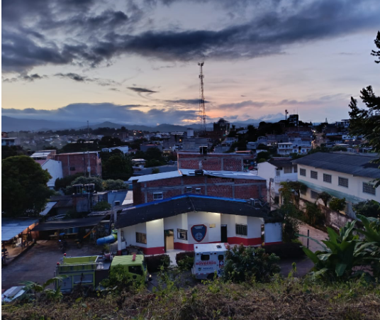

Cuerpo de Bomberos Voluntarios de Santa Rosa del Sur (Bolívar)
Proteger la vida, los bienes y el medio ambiente de la comunidad de Santa Rosa del Sur, mediante la prevención, preparación y atención oportuna de emergencias causadas por incendios, rescates y materiales peligrosos. Brindamos un servicio con disciplina, valor y compromiso social, fortaleciendo la gestión del riesgo y promoviendo una cultura de autoprotección a través de la capacitación, asesoría y acompañamiento a las autoridades y ciudadanía del municipio.
Ser una institución líder en la región sur de Bolívar en la prevención, atención y control de emergencias, destacándose por su compromiso con la vida, la seguridad ciudadana y el medio ambiente. Aspiramos a ser reconocidos a nivel departamental y nacional por nuestra excelencia operativa, el uso de tecnologías modernas, la formación continua de nuestro personal y la entrega con la que servimos a nuestra comunidad. Trabajamos con responsabilidad, integridad y vocación de servicio para construir un municipio más seguro y resiliente.
Combatir incendios en todas sus modalidades, rescates, primeros auxilios(APH), Evacuaciones, inspecciones de seguridad humana, planes de Emergencia, ademas de dar charlas preventivas a entidades sobre riesgos y demás

📞 Emergencia: 3227252434 - 3175657289
✉️ Correo electrónico:
• bomberossantarosadelsur@gmail.com
📍 Santa Rosa del sur:
• 11-2 a, La Piladora, Cl. 6 #11-56, Santa Rosa Del Sur, Bolívar
🕒 Horario de Atención (Oficina)
• 8:00 a.m. - 5:00 p.m.
• Sábados: 8:00 a.m. - 1:00 p.m.